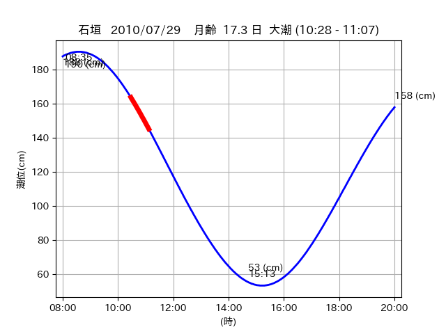
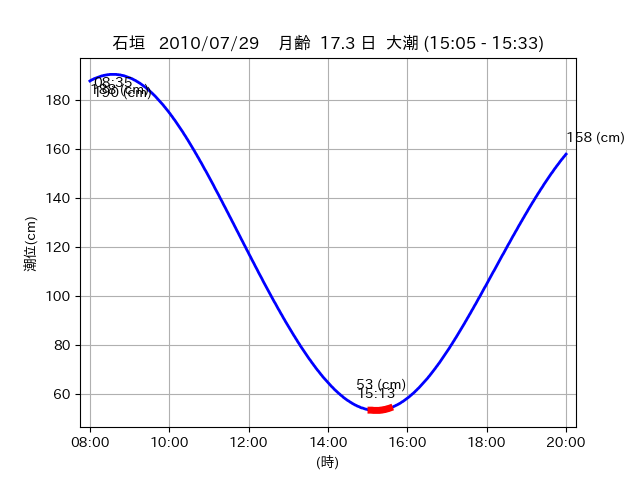

<!DOCTYPE html>
<html>
<head>
    
    <meta http-equiv="content-type" content="text/html; charset=UTF-8" />
    
        <script>
            L_NO_TOUCH = false;
            L_DISABLE_3D = false;
        </script>
    
    <style>html, body {width: 100%;height: 100%;margin: 0;padding: 0;}</style>
    <style>#map {position:absolute;top:0;bottom:0;right:0;left:0;}</style>
    <script src="https://cdn.jsdelivr.net/npm/leaflet@1.9.3/dist/leaflet.js"></script>
    <script src="https://code.jquery.com/jquery-3.7.1.min.js"></script>
    <script src="https://cdn.jsdelivr.net/npm/bootstrap@5.2.2/dist/js/bootstrap.bundle.min.js"></script>
    <script src="https://cdnjs.cloudflare.com/ajax/libs/Leaflet.awesome-markers/2.0.2/leaflet.awesome-markers.js"></script>
    <link rel="stylesheet" href="https://cdn.jsdelivr.net/npm/leaflet@1.9.3/dist/leaflet.css"/>
    <link rel="stylesheet" href="https://cdn.jsdelivr.net/npm/bootstrap@5.2.2/dist/css/bootstrap.min.css"/>
    <link rel="stylesheet" href="https://netdna.bootstrapcdn.com/bootstrap/3.0.0/css/bootstrap-glyphicons.css"/>
    <link rel="stylesheet" href="https://cdn.jsdelivr.net/npm/@fortawesome/fontawesome-free@6.2.0/css/all.min.css"/>
    <link rel="stylesheet" href="https://cdnjs.cloudflare.com/ajax/libs/Leaflet.awesome-markers/2.0.2/leaflet.awesome-markers.css"/>
    <link rel="stylesheet" href="https://cdn.jsdelivr.net/gh/python-visualization/folium/folium/templates/leaflet.awesome.rotate.min.css"/>
    
            <meta name="viewport" content="width=device-width,
                initial-scale=1.0, maximum-scale=1.0, user-scalable=no" />
            <style>
                #map_8dc9a40b5213c04e43ff05c272424bd2 {
                    position: relative;
                    width: 2048.0px;
                    height: 1600.0px;
                    left: 0.0%;
                    top: 0.0%;
                }
                .leaflet-container { font-size: 1rem; }
            </style>
        
</head>
<body>
    
    
            <div class="folium-map" id="map_8dc9a40b5213c04e43ff05c272424bd2" ></div>
        
</body>
<script>
    
    
            var map_8dc9a40b5213c04e43ff05c272424bd2 = L.map(
                "map_8dc9a40b5213c04e43ff05c272424bd2",
                {
                    center: [24.371, 123.953],
                    crs: L.CRS.EPSG3857,
                    ...{
  "zoom": 12,
  "zoomControl": true,
  "preferCanvas": false,
}

                }
            );

            

        
    
            var tile_layer_c5156fc81b18c3a0451562904367fb12 = L.tileLayer(
                "https://cyberjapandata.gsi.go.jp/xyz/seamlessphoto/{z}/{x}/{y}.jpg",
                {
  "minZoom": 0,
  "maxZoom": 18,
  "maxNativeZoom": 18,
  "noWrap": false,
  "attribution": "\u5730\u7406\u9662\u5730\u56f3",
  "subdomains": "abc",
  "detectRetina": false,
  "tms": false,
  "opacity": 1,
}

            );
        
    
            tile_layer_c5156fc81b18c3a0451562904367fb12.addTo(map_8dc9a40b5213c04e43ff05c272424bd2);
        
    
            var marker_727aaa0b50cfc53fbebeb28429a277bc = L.marker(
                [24.3676, 123.9606],
                {
}
            ).addTo(map_8dc9a40b5213c04e43ff05c272424bd2);
        
    
            var icon_901475a2f656abc4653a895c410716da = L.AwesomeMarkers.icon(
                {
  "markerColor": "orange",
  "iconColor": "white",
  "icon": "info-sign",
  "prefix": "glyphicon",
  "extraClasses": "fa-rotate-0",
}
            );
        
    
        var popup_e888c74340e06f42e21fc40de34d2407 = L.popup({
  "maxWidth": "100%",
});

        
            
                var html_37f939ca92101565159a92f57ef812b7 = $(`<div id="html_37f939ca92101565159a92f57ef812b7" style="width: 100.0%; height: 100.0%;"><table><tr><td></td></tr><tr><td><center>20100729 No.1 </center></table></td></tr></table</div>`)[0];
                popup_e888c74340e06f42e21fc40de34d2407.setContent(html_37f939ca92101565159a92f57ef812b7);
            
        

        marker_727aaa0b50cfc53fbebeb28429a277bc.bindPopup(popup_e888c74340e06f42e21fc40de34d2407)
        ;

        
    
    
                marker_727aaa0b50cfc53fbebeb28429a277bc.setIcon(icon_901475a2f656abc4653a895c410716da);
            
    
            var poly_line_99ad87dedee9479be516534eb268d32c = L.polyline(
                [[24.3676, 123.9606], [24.3696, 123.963]],
                {"bubblingMouseEvents": true, "color": "#FF00FF", "dashArray": null, "dashOffset": null, "fill": false, "fillColor": "#FF00FF", "fillOpacity": 0.2, "fillRule": "evenodd", "lineCap": "round", "lineJoin": "round", "noClip": false, "opacity": 1.0, "smoothFactor": 1.0, "stroke": true, "weight": 3}
            ).addTo(map_8dc9a40b5213c04e43ff05c272424bd2);
        
    
            var marker_240c2ed34b079382794c08767a58e8fa = L.marker(
                [24.3939, 123.91],
                {
}
            ).addTo(map_8dc9a40b5213c04e43ff05c272424bd2);
        
    
            var icon_035fc8e653237bd691dadf486ad28bd2 = L.AwesomeMarkers.icon(
                {
  "markerColor": "orange",
  "iconColor": "white",
  "icon": "info-sign",
  "prefix": "glyphicon",
  "extraClasses": "fa-rotate-0",
}
            );
        
    
        var popup_4a2a59f08764208845f960e1e5ba94db = L.popup({
  "maxWidth": "100%",
});

        
            
                var html_c6b74215dd6952c4475222694b32be35 = $(`<div id="html_c6b74215dd6952c4475222694b32be35" style="width: 100.0%; height: 100.0%;"><table><tr><td></td></tr><tr><td><center>20100729 No.2 </center></table></td></tr></table</div>`)[0];
                popup_4a2a59f08764208845f960e1e5ba94db.setContent(html_c6b74215dd6952c4475222694b32be35);
            
        

        marker_240c2ed34b079382794c08767a58e8fa.bindPopup(popup_4a2a59f08764208845f960e1e5ba94db)
        ;

        
    
    
                marker_240c2ed34b079382794c08767a58e8fa.setIcon(icon_035fc8e653237bd691dadf486ad28bd2);
            
    
            var poly_line_983b24f80698bf71486d95754e6914f5 = L.polyline(
                [[24.3939, 123.91], [24.4, 123.909]],
                {"bubblingMouseEvents": true, "color": "#FF00FF", "dashArray": null, "dashOffset": null, "fill": false, "fillColor": "#FF00FF", "fillOpacity": 0.2, "fillRule": "evenodd", "lineCap": "round", "lineJoin": "round", "noClip": false, "opacity": 1.0, "smoothFactor": 1.0, "stroke": true, "weight": 3}
            ).addTo(map_8dc9a40b5213c04e43ff05c272424bd2);
        
    
            var marker_bdd20c5dd5866837d62b1d16f0901a9b = L.marker(
                [24.3723, 123.951],
                {
}
            ).addTo(map_8dc9a40b5213c04e43ff05c272424bd2);
        
    
            var icon_0caabc1f44a65ee7c455368978dda811 = L.AwesomeMarkers.icon(
                {
  "markerColor": "orange",
  "iconColor": "white",
  "icon": "info-sign",
  "prefix": "glyphicon",
  "extraClasses": "fa-rotate-0",
}
            );
        
    
        var popup_d35d9aee4f126ad06cc375b6960b71d8 = L.popup({
  "maxWidth": "100%",
});

        
            
                var html_b0bce81b9aebb2e759a2550c8c99ab4d = $(`<div id="html_b0bce81b9aebb2e759a2550c8c99ab4d" style="width: 100.0%; height: 100.0%;"><table><tr><td></td></tr><tr><td><center>20100729 No.3 </center></table></td></tr></table</div>`)[0];
                popup_d35d9aee4f126ad06cc375b6960b71d8.setContent(html_b0bce81b9aebb2e759a2550c8c99ab4d);
            
        

        marker_bdd20c5dd5866837d62b1d16f0901a9b.bindPopup(popup_d35d9aee4f126ad06cc375b6960b71d8)
        ;

        
    
    
                marker_bdd20c5dd5866837d62b1d16f0901a9b.setIcon(icon_0caabc1f44a65ee7c455368978dda811);
            
    
            var poly_line_ef4cbe378cd566ba1aec64efd8cf9a10 = L.polyline(
                [[24.3723, 123.951], [24.3695, 123.9544]],
                {"bubblingMouseEvents": true, "color": "#00FFFF", "dashArray": null, "dashOffset": null, "fill": false, "fillColor": "#00FFFF", "fillOpacity": 0.2, "fillRule": "evenodd", "lineCap": "round", "lineJoin": "round", "noClip": false, "opacity": 1.0, "smoothFactor": 1.0, "stroke": true, "weight": 3}
            ).addTo(map_8dc9a40b5213c04e43ff05c272424bd2);
        
</script>
</html>